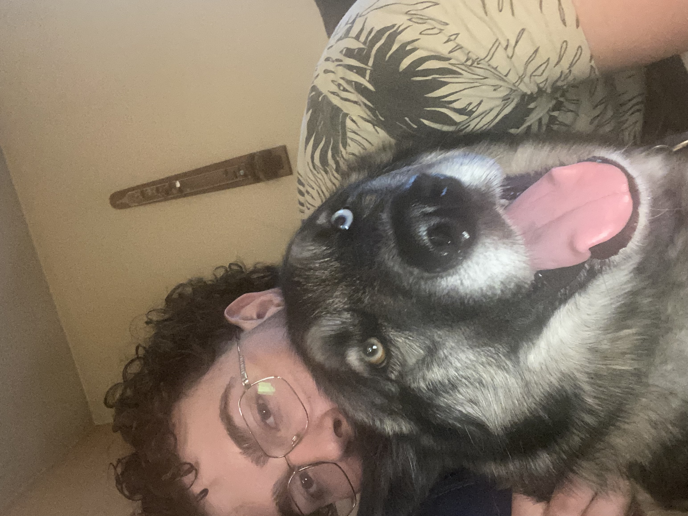

Some of my Favorite Hobbies:
- Snowboarding: Absolutely love this sport, whenever I'm on the mountain I feel so present.
- Surfing: Surfing brings being present to a whole new level. The whole time I'm in the water I am living live completely in the moment!
- Hiking: Love being outside in the fresh air surrounded by trees and wildlife.
- Foodie: I am a big guy and being a foodie helps that. I love trying new foods!
- Dog Father: I am the father of a baby boy named "Yuki" (he's a Siberian Husky not a human baby)
- Video Games: They been a part of my life since I was little. I spend a good part of my free time at home playing video games.
- Movies: Nothing like sitting back and relaxing watching a thriller movie


